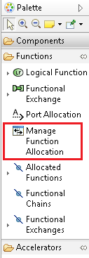
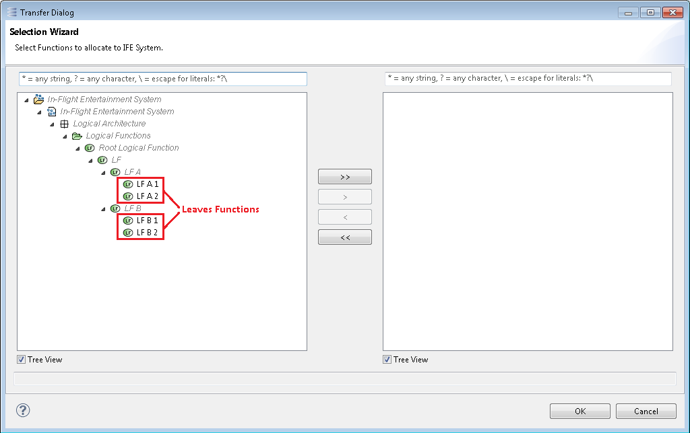
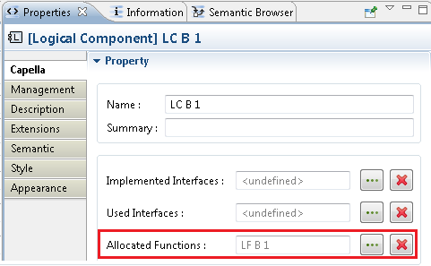
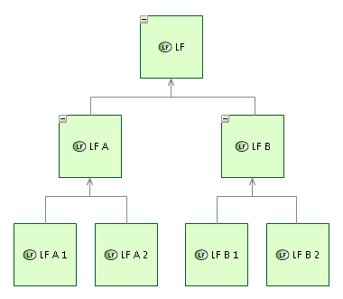
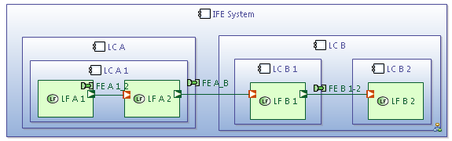
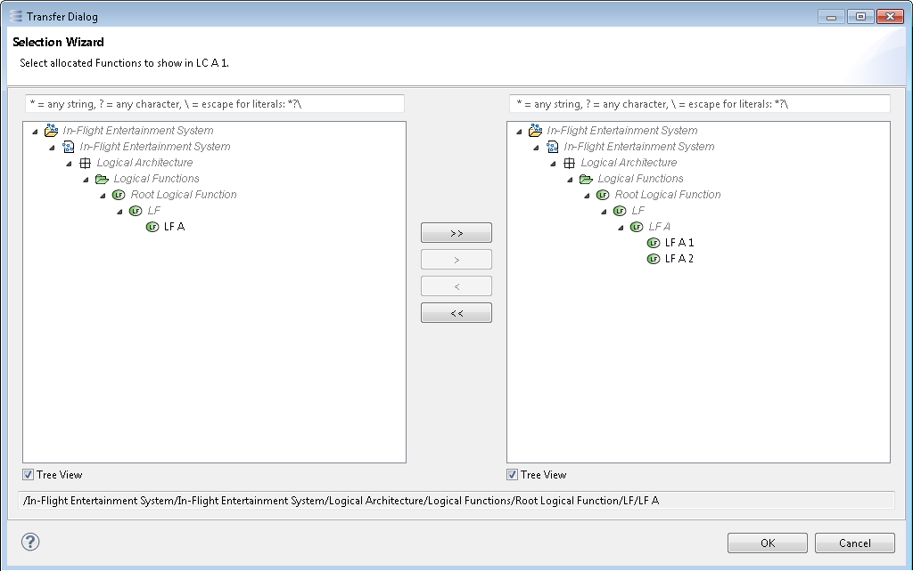
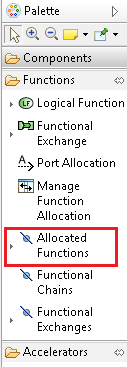
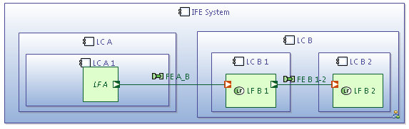
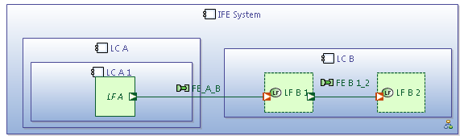
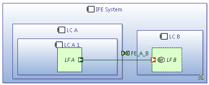

Allocating Functions (or Operational Activities) on System, Actors and Components (or Entities, Operational Actors and Roles for Operational Activities) can be done using the reference in the property view, or via the tool Manage Function Allocation in a diagram.

In both case, only leaves functions (i.e. functions without child functions) can be allocated directly.

Allocating those functions will modify the selected diagram and the model by completing the "allocated functions" reference for the selected component.

Let's consider that we have the following functions tree.

We have seen that the leaves functions can be allocated that way. 
When a parent function have all its leaves allocated on the same component, and/or on its sub component, it is possible to represent this parent function as an allocated one.
For instance, in the last picture, "LF A 1" and "LF A 2" are two child functions of "LF A". As both "LF A 1" and "LF A 2" are allocated on "LC A 1", it is possible to represent "LF A" as allocated on "LC A".

To do this, we shall use the "Allocated Function" tool in "LC A 1" and add "LF A".

The resulting diagram displays "LF A" as allocated in "LC A".

 As a parent function
"LF A" appears in italic to differenciate it from allocated leaves.
As a parent function
"LF A" appears in italic to differenciate it from allocated leaves.
When the component allocating a function is not represented in the diagram, the allocated function can also be represented on one of its parent component.
For instance, in the last picture, "LF B 1" and "LF B 2" are allocated respectively on "LC B 1" and "LC B 2". If we hide on this component, then the corresponding function can be represented in "LC B".
To do this, we shall use the "Allocated Component" tool in "LC B" and remove "LF B 1" and "LF B 2". Hence, we can use the "Allocated Function" tool in "LC B" and add "LF B 1" and "LF B 2".
The resulting diagram displays "LF A" as allocated in "LC A".

 As Functions allocated on a subcomponent,
"LF B 1" and
"LF B 2" appears with a dashed border to differenciate them from functions allocated on this component.
As Functions allocated on a subcomponent,
"LF B 1" and
"LF B 2" appears with a dashed border to differenciate them from functions allocated on this component.
We can also chose to display "LF B" in "LC B".

And finally if we hide both "LC A" and "LC B" it is possible to represent "LF" in the System.
|
|
Dotted Style rules :
|